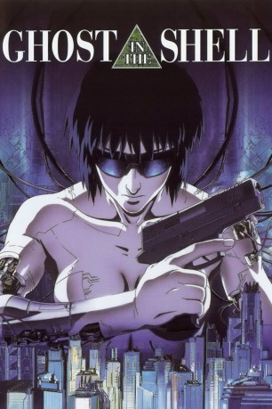

#2227 Ghost in the Shell
 
 IMDB-Wertung: 8.0 / 10
IMDB-Wertung: 8.0 / 10  Metascore: 76
Metascore: 76 
Genrebildender Science-Fiction-Anime aus dem Jahr 1995. Der Zeichentrickfilm, der auf dem gleichnamigen Manga von Masamune Shirow basiert, gilt als Klassiker des Anime-Genres und spricht mit den existenzphilosophischen Fragen, die er aufwirft, besonders Erwachsene an. Motoko Kusanagi, Major einer Polizeieinheit, jagt 2029 den "Puppenspieler", eine außer Kontrolle geratene Cyberspace-Lebensform.
Jahr: 1995
Dauer: 83 Minuten
FSK: 16
Land: Japan Studio: Rapid Eye MoviesTonspuren:
Untertitel: Deutsch,
Auflösung: 1080p (1856x1008) Größe: 7045 MB
Genre: Action, Thriller, Sci-Fi, Animation/Trick, Mystery
Regisseur: Mamoru Oshii
Drehbuch: Shirow Masamune, Kazunori Itô
Soundtrack: Kenji Kawai
Darsteller:
Datei: X:\HD-Anime-Collections\Ghost in the Shell\Ghost in the Shell (1995, FSK16, 1856x1008).mkv seit 22.10.2015
Festplatte: Gemischt-01+Anime
 Es gibt insgesamt 15 Filme in der Gruppe 'HD-Anime-Collections\Ghost in the Shell'
Es gibt insgesamt 15 Filme in der Gruppe 'HD-Anime-Collections\Ghost in the Shell'